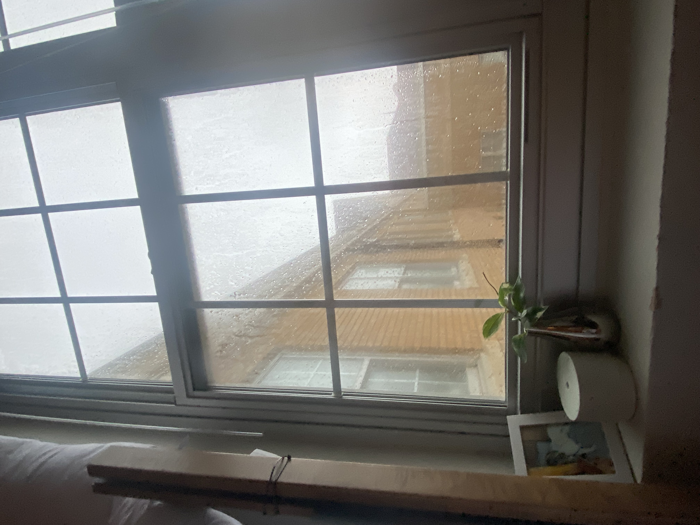

Experiment A: Portfolio Enhancement

Experiment C: Debug with AI


Critical Reflection
Technical Understanding
1. In Experiment A, the AI code made an image gallery of photos horizontally layed out. It features 3 images I've taken of TCU. In Experiment C, I wanted to add a screenshot of the code that worked in Experiment A. When I did so, it was partly cut off (see above for corrected and broken codes).
2. Experiment A works by listing the images in one section. I understand this because it follows the same pattern of inserting one image. I honestly would've thought it would be more complicated but it seems simple considering the code I already know. Experiment C was an issue in the sizing with "width" and "max-width". It was clear to me that something with those was the issue so I guided my AI in the right direction.
3. In Experient A, I only changed one thing of the AI's code. I wanted to add the width because all the images were massive. In Experience C, I didn't change anything. Once I had AI fix the code, it looked great.
Proccess Evaluation
4. In Experiment A, AI was helpful in showing me how to create the gallery. I changed the sizing and layout but AI was able to create baseline code for me to work off of. In Experiment C, I didn't have to change anything once AI fixed the broken code.
5. AI was problematic at first in giving me extra code for Experiment A. I asked for HTML and it gave me python and CSS too. It was extra complicated because it made me confused but then I realized it was the same thing in different coding languages.
6. Working code and style will always be uniquely human. AI does a great job at baseline code but it doesn't always come out perfect and it can't add human style. For example, in Expirience A, the way AI layed out the images didn't look pleasing. Once I added width sizes it made it look so much better.
Ethical & Pedagogical Considerations
7. Vibe coding helps me learn baseline code that I can build off of. I think being overly reliant on it is risky, but overall it's a good tool to cut time in code development.
8. To cite code, one can add an AI disclaimer or put it in the citations list if specific content is generated.
9. I will only use code for a base to work off of. This makes the msot sense for me as I can learn new tools and fix broken code.